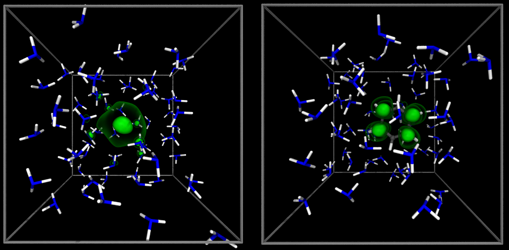
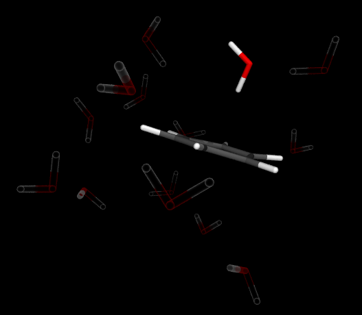

One does not exaggerate much when one says that hydrogen bonding is crucial to life.
Hydrogen bonds are the culprit behind the fact that water is liquid at room temperature and that
biopolymers such as proteins or DNA are so structurally rich to make up a functional living
organism.
Our research, located just between physical chemistry, theoretical physics and computational
science, aims at a description of structure and dynamics of various hydrogen bonded systems,
ranging from the most common ones such as liquid water to ones that are more exotic, at a
molecular level.
To this end, we employ a theoretical method called molecular dynamics simulation where the studied
system is computationally propagated through time to obtain information on molecular properties.
In our work, we would typically obtain potentials that govern the behavior of molecular systems
from quantum electronic structure: this is called ab initio molecular dynamics. While this
is a very accurate way how to treat molecular interactions, its inherent complexity can lead to
a high computational cost.
In this direction, we recently started exploring the methodology and applications of machine learning
to make this task a little easier.
In addition to quantum electrons, in our research we address nuclear quantum effects—a deviation
of molecular properties from classical expectations due to the quantum nature of nuclei—through
the imaginary time path integral formalism.
Liquid ammonia is very similar to liquid water in many aspects. One point where they significantly
differ is their reaction with alkali metals.
It is well known that alkali metals tend to explode
on touch with water.
This is due to the liberation of so-called solvated electrons from the alkali
metal that react violently with water.
In ammonia solvated electrons are formed as well, however, their
reaction with the solvent is slow and they form a beautifully blue solution rather than an explosion.
Solvated electrons in liquid ammonia can therefore be used to do meaningful chemistry with the most famous
example being the Birch reduction of aromatic compounds.
Here we explore the chemistry/physics of solvated electrons and what happens when they meet and aromatic
compound such as benzene.

Benzene is interesing even without electrons attached to it.
Curiously enough, it dissolves rather well in liquid ammonia as well as water, despite being a
non-polar hydrocarbon.
We suspect that this has to do a lot with the formation of π-hydrogen bonds in such solution.
This is a very non-typical hydrogen bond between a water molecule and the benzene's π electrons.
In our work, we are interested both in the structure and dynamics of such hydrogen bonds with
a possible extent into theoretical vibrational spectroscopy, which seems to be a promising tool
to study these effects.
